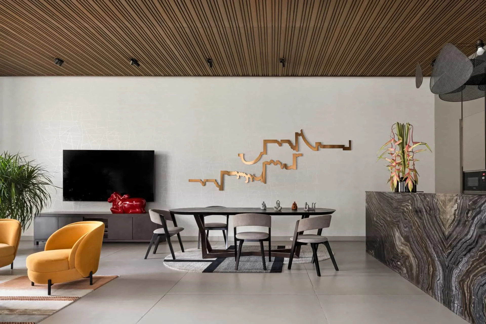
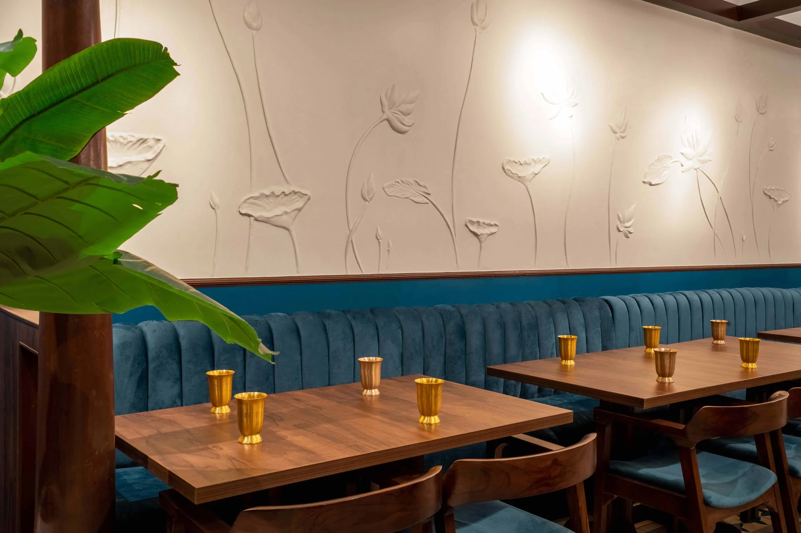
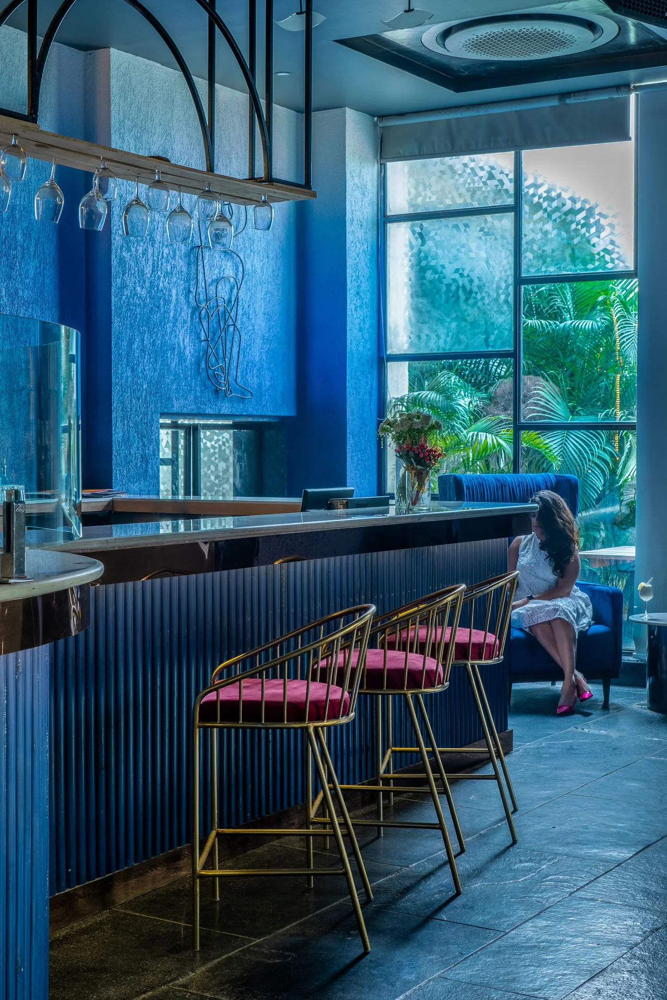
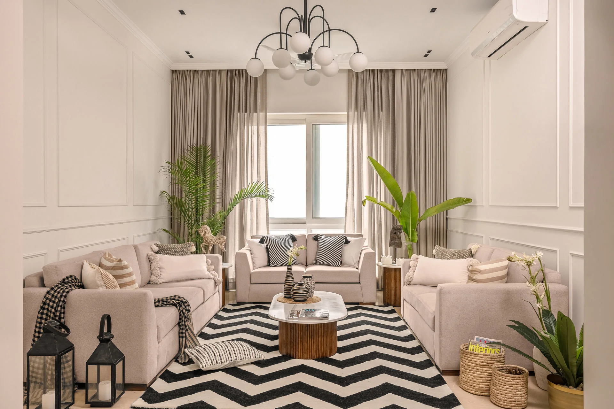

Context before style.
We map the site, circulation, rituals, service flow and constraints before deciding what the space wants to become.
Delhi-based architecture and interior design studio
Spatial work for homes, restaurants, workplaces and cultural interiors, built with atmosphere, technical clarity and sharper studio systems.

The Pool House / Residential architecture
Padmanabham / Hospitality interiorWarm minimalism, rooted material palettes, operationally aware hospitality, and homes that feel deeply lived in.


We map the site, circulation, rituals, service flow and constraints before deciding what the space wants to become.
Finishes, light, furniture and detail are treated as one system, so the visual atmosphere survives procurement and site execution.
Drawings, schedules, site conversations and review loops are kept precise so the idea can survive real timelines and real budgets.
Each project starts with a close read of context: site, movement, mood, client ambition and the realities of execution. The work is built through plans, material studies, light, furniture, detail and the quiet adjustments that make a space feel inevitable.
Concept design, planning, massing, facade language, drawing coordination and site-led strategy.
Interior designHomes, restaurants, bars, workplaces and retail interiors resolved through materials, lighting and furniture.
Hire restaurant architects in DelhiGuest flow, kitchen adjacencies, bar and service logic, atmosphere, and execution support for dining rooms and hospitality spaces.
Execution supportDesign intent checks, schedules, vendor coordination and site decisions that protect the final outcome.
"Urban Mistrii brought a level of precision to our restaurant that we did not think was possible in this timeline. Every detail was considered."
"They understand how spaces actually get built. The drawings are detailed, but they also show up on site and make sure it holds together."
"Working with Urban Mistrii felt collaborative from day one. The result is a home that genuinely works for how we live."
For architecture, interiors, hospitality, workplace, residential, installation and media enquiries.